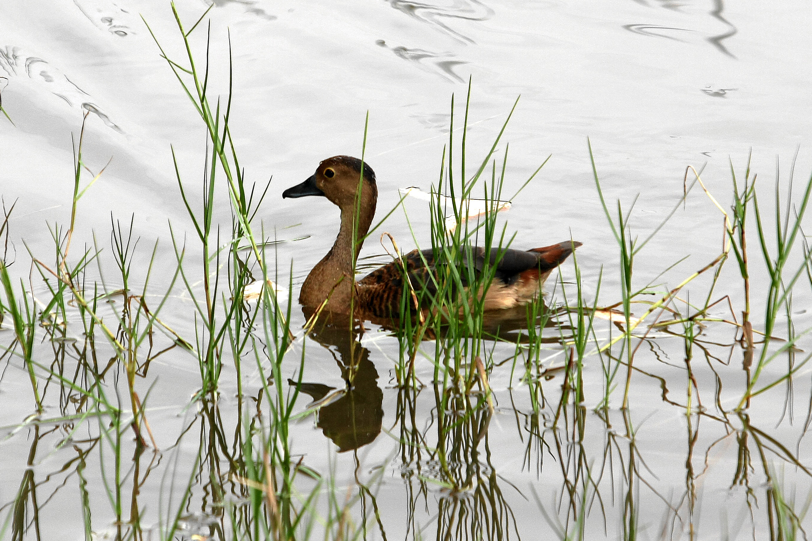

A regional park located in the Southwest of Singapore, it runs parallel to West Coast Highway and comprises 50 hectares of Parkland.
Catered to families and groups of all ages and size, West Coast Park is a place for people to have fun and engage in bonding sessions!
If you are looking for a place with really big playgrounds, West Coast Park would be the place! Made up of six different playgrounds filled with equipment suitable for people of all ages, it is the most active zone of the park and is the perfect place for a fun filled day as a family or a big group outing.
-Location: Area 3
-Suitable for kids ages 10 and above
-Consists of eight play sets and obstacle courses, featuring climbing equipment, zip line, slides and other stations
It is the only other playground apart from the toddler play area that does not contain a sand pit. Instead the ground is covered with soft foam, suitable for people on wheelchairs to join in the fun!


The ramp here is designed in such a way that it is wide enough for wheelchairs to go up and for children of all abilities to use.
For more information on the different playgrounds, click HERE.
For families or outdoor enthusiasts looking to try out camping in a decent environment, West Coast Park would be the place to do so! With designated areas to set up tents and toilets nearby, coupled with a 24 hours MacDonalds, the park is a convenient place for families and groups to try sleeping under the Canvas, waking up in the park and exploring the park at night.

However, due to the increase in campers in recent years, to better manage the camping activities to enhance the recreational experience of campers without inconveniencing other park users, one would have to apply for a camping permit to stay the night.
Click HERE to apply for a camping permit.
Furthermore for those who are looking to cycle as well, there are a few bicycle rental shops in West Coast Park, such as GoCyling and Togoparts. They even provide GoKarts for families with young children to cycle together!

GoCycling location: 51 West Coast Highway (Carpark 2)

Togoparts location: Carpark 2 beside BBQ pits
For those looking to cook and eat their own food in the outdoors, there are some 9 BBQ pits located at Area 2, which is located near the camp site too if you are looking to stay the night!
Click HERE to book a BBQ pit.

Fancy flying some kites but living in the West? The Grand Lawn, an open space of 3 hectares, is another place for some kite flying experience.
For the bird watchers enthusiasts, you can take a stroll to the Marsh Garden to try and spot the various birds such as the Great-Billed Heron or the white-breasted Waterhen.
 For more activities to do at West Coast Park, Visit
https://thesmartlocal.com/read/west-coast-park-singapore/ to find out more!